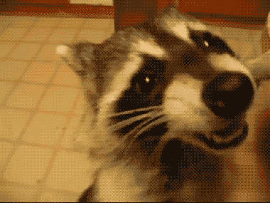

Hola! soy Dayana Pañitrur, Tengo 23 años y soy estudiante de 3er año de la carrera de Diseño en la Universidad Diego Portales.
Actualmente estoy cursando asignaturas de interacción digital, lo cuál me ha generado interés por distintas áreas de la mención y la convergencia entre estas: como la electrónica, la programación, la experimentación visual y sonora.

Intereses
Entre mis intereses personales se encuentran:
- 1. el sonido
- 2. la fotografía
- 3. la naturaleza
1: El sonido es una de las áreas en las que más interesada me encuentro y espero poder estar mucho más inmersa. Elementos tanto materiales como digitales me han dado la oportunidad de experimentar con este, como por ejemplo la creación de sintetizadores, pedales de efectos para guitarra y la creación de música a través de código con Strudel y SonicPi.
2: La fotografía es un área que al igual que la música ha estado presente como un interés,hobby y trabajo en mi vida. No realizo un estilo fotográfico único, gracias a las experiencias he logrado experimentar con diversas técnicas, por lo que me gusta explorar de lo que salga en cada una de ellas.
3: Me gusta recorrer paisajes naturales, cada cierto tiempo mi mente me pide espacios abiertos con naturaleza para no caer en la locura de la ciudad. Entre estas actividades se encuentran salir a caminar, hacer trekking o realizar viajes al sur o a lugares montañosos.
mi pag fav para codear musica
otra para codear música también muy buena
en mis tiempos libres me gusta jugar a ser dj, mezcla tu musiquita